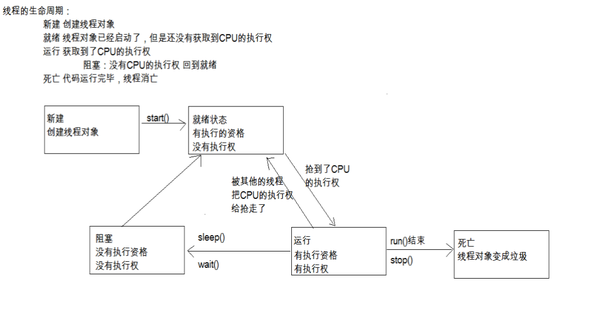

026-day25-多线程2
25.01_多线程(单例设计模式)(掌握)¶
-
单例设计模式：保证类在内存中只有一个对象。
-
如何保证类在内存中只有一个对象呢？
-
(1)控制类的创建，不让其他类来创建本类的对象。private
- (2)在本类中定义一个本类的对象。Singleton s;
- (3)提供公共的访问方式。 public static Singleton getInstance(){return s}
-
单例写法两种：
-
(1)饿汉式 开发用这种方式。
```java //饿汉式 class Singleton { //1,私有构造函数 private Singleton(){} //2,创建本类对象 private static Singleton s = new Singleton(); //3,对外提供公共的访问方法 public static Singleton getInstance() { return s; }
public static void print() { System.out.println("11111111111"); }} ```
-
(2)懒汉式 面试写这种方式。多线程的问题？
java //懒汉式,单例的延迟加载模式 class Singleton { //1,私有构造函数 private Singleton(){} //2,声明一个本类的引用 private static Singleton s; //3,对外提供公共的访问方法 public static Singleton getInstance() { if(s == null) //线程1,线程2 s = new Singleton(); return s; } public static void print() { System.out.println("11111111111"); } } -
(3)第三种格式
```java class Singleton { private Singleton() {}
public static final Singleton s = new Singleton();//final是最终的意思,被final修饰的变量不可以被更改 } ```
整个的程序
```java package com.heima.thread;
public class Demo1_Singleton {
/** * @param args * * 单例设计模式：保证类在内存中只有一个对象。 */ public static void main(String[] args) { // Singleton s1 = new Singleton(); Singleton s1 = Singleton.s; // 第三种设计模型,直接使用类名.调用对象,使用了final进行修饰,同样不能被改变 // Singleton.s = null; Singleton s2 = Singleton.s; System.out.println(s1 == s2); /* * Singleton s1 = Singleton.getInstance(); //饿汉式使用的是gey方法获取这个对象 * Singleton s2 = Singleton.getInstance(); * * System.out.println(s1 == s2); */ }}
/* * 饿汉式 * * class Singleton { //1,私有构造方法,其他类不能访问该构造方法了 private Singleton(){} * //构造方法加关键字private //2,创建本类对象 private static Singleton s = new Singleton(); * //在类中创建一个本类的对象,加上private就不能通过类名.调用 //3,对外提供公共的访问方法 public static Singleton * getInstance() { //获取实例 return s; } } / / * 懒汉式,单例的延迟加载模式 / / * class Singleton { //1,私有构造方法,其他类不能访问该构造方法了 private Singleton(){} //2,声明一个引用 * private static Singleton s ; //3,对外提供公共的访问方法 public static Singleton * getInstance() { //获取实例 if(s == null) { //线程1等待,线程2等待 s = new Singleton(); } * * return s; } } / / * 饿汉式和懒汉式的区别 1,饿汉式是空间换时间,懒汉式是时间换空间 2,在多线程访问时,饿汉式不会创建多个对象,而懒汉式有可能会创建多个对象 */
// 同样可以实现单例设计模式,使用的是final class Singleton { // 1,私有构造方法,其他类不能访问该构造方法了 private Singleton() { }
// 2,声明一个引用 public static final Singleton s = new Singleton();
}
```
25.02_多线程(Runtime类)¶
-
-
Runtime类是一个单例类
Runtime r = Runtime.getRuntime(); //r.exec("shutdown -s -t 300"); //300秒后关机 r.exec("shutdown -a"); //取消关机
package com.heima.thread; import java.io.IOException; public class Demo2_Runtime { /** * @param args * @throws IOException */ public static void main(String[] args) throws IOException { Runtime r = Runtime.getRuntime(); //获取运行时对象 饿汉式的单例设计对象 //r.exec("shutdown -s -t 300"); r.exec("shutdown -a"); } }
25.03_多线程(Timer)(掌握)¶
- Timer类:计时器
```java
package com.heima.thread;
import java.util.Date;
import java.util.Timer;
import java.util.TimerTask;
public class Demo3_Timer {
/**
* @param args
* @throws InterruptedException
*/
public static void main(String[] args) throws InterruptedException {
Timer t = new Timer();
// 在指定时间安排指定任务
// 第一个+参数,是安排的任务,第二个参数是执行的时间,第三个参数是过多长时间再重复执行
t.schedule(new MyTimerTask(), new Date(119, 6, 29, 18, 32, 50), 3000);
while (true) {
Thread.sleep(1000);
System.out.println(new Date());
}
}
}
class MyTimerTask extends TimerTask { // 这个是定时器任务继承的是Timertask
@Override
public void run() { // 重新定义run方法
System.out.println("起床背英语单词");
}
}
```
25.04_多线程(两个线程间的通信)(掌握)¶
-
1.什么时候需要通信
-
多个线程并发执行时, 在默认情况下CPU是随机切换线程的
- 如果我们希望他们有规律的执行, 就可以使用通信, 例如每个线程执行一次打印
-
2.怎么通信
-
如果希望线程等待, 就调用wait()
- 如果希望唤醒等待的线程, 就调用notify();
- 这两个方法必须在同步代码中执行, 并且使用同步锁对象来调用
```java package com.heima.thread2;
public class Demo1_Notify {
/** * @param args * 等待唤醒机制 */ public static void main(String[] args) { final Printer p = new Printer(); new Thread() { public void run() { while (true) { try { p.print1(); } catch (InterruptedException e) { e.printStackTrace(); } } } }.start(); new Thread() { public void run() { while (true) { try { p.print2(); } catch (InterruptedException e) { e.printStackTrace(); } } } }.start(); }}
// 等待唤醒机制 class Printer { private int flag = 1;
public void print1() throws InterruptedException { synchronized (this) { if (flag != 1) { this.wait(); // 当前线程等待,等待之前是要唤醒别的进程的 } System.out.print("黑"); System.out.print("马"); System.out.print("程"); System.out.print("序"); System.out.print("员"); System.out.print("\r\n"); flag = 2; this.notify(); // 随机唤醒单个等待的线程 } } public void print2() throws InterruptedException { synchronized (this) { if (flag != 2) { this.wait(); } System.out.print("传"); System.out.print("智"); System.out.print("播"); System.out.print("客"); System.out.print("\r\n"); flag = 1; this.notify(); } }}
```
25.05_多线程(三个或三个以上间的线程通信)¶
-
多个线程通信的问题
-
notify()方法是随机唤醒一个线程
- notifyAll()方法是唤醒所有线程
-
JDK5之前无法唤醒指定的一个线程
-
如果多个线程之间通信, 需要使用notifyAll()通知所有线程, 用while来反复判断条件
```java package com.heima.thread2;
public class Demo2_NotifyAll {
/** * @param args */ public static void main(String[] args) { final Printer2 p = new Printer2(); new Thread() { public void run() { while(true) { try { p.print1(); } catch (InterruptedException e) { e.printStackTrace(); } } } }.start(); new Thread() { public void run() { while(true) { try { p.print2(); } catch (InterruptedException e) { e.printStackTrace(); } } } }.start(); new Thread() { public void run() { while(true) { try { p.print3(); } catch (InterruptedException e) { e.printStackTrace(); } } } }.start(); }} /*1,在同步代码块中,用哪个对象锁,就用哪个对象调用wait方法 * 2,为什么wait方法和notify方法定义在Object这类中? * 因为锁对象可以是任意对象,Object是所有的类的基类,所以wait方法和notify方法需要定义在Object这个类中 * 3,sleep方法和wait方法的区别? * a,sleep方法必须传入参数,参数就是时间,时间到了自动醒来 * wait方法可以传入参数也可以不传入参数,传入参数就是在参数的时间结束后等待,不传入参数就是直接等待 * b,sleep方法在同步函数或同步代码块中,不释放锁,睡着了也抱着锁睡 * wait方法在同步函数或者同步代码块中,释放锁 */ class Printer2 { private int flag = 1; public void print1() throws InterruptedException {
synchronized(this) { while(flag != 1) { this.wait(); //当前线程等待 } System.out.print("黑"); System.out.print("马"); System.out.print("程"); System.out.print("序"); System.out.print("员"); System.out.print("\r\n"); flag = 2; //this.notify(); //随机唤醒单个等待的线程 this.notifyAll(); } }public void print2() throws InterruptedException { synchronized(this) { while(flag != 2) { this.wait(); //线程2在此等待 } System.out.print("传"); System.out.print("智"); System.out.print("播"); System.out.print("客"); System.out.print("\r\n"); flag = 3; //this.notify(); this.notifyAll(); } } public void print3() throws InterruptedException { synchronized(this) { while(flag != 3) { this.wait(); //线程3在此等待,if语句是在哪里等待,就在哪里起来 //while循环是循环判断,每次都会判断标记 } System.out.print("i"); System.out.print("t"); System.out.print("h"); System.out.print("e"); System.out.print("i"); System.out.print("m"); System.out.print("a"); System.out.print("\r\n"); flag = 1; //this.notify(); //这个容易造成所有的都等待 this.notifyAll(); } }}
```
### 25.06_多线程(JDK1.5的新特性互斥锁)(掌握)
-
1.同步
-
使用ReentrantLock类的lock()和unlock()方法进行同步
-
2.通信
-
使用ReentrantLock类的newCondition()方法可以获取Condition对象
-
需要等待的时候使用Condition的await()方法, 唤醒的时候用signal()方法
-
不同的线程使用不同的Condition, 这样就能区分唤醒的时候找哪个线程了
```java package com.heima.thread2;
import java.util.concurrent.locks.Condition; import java.util.concurrent.locks.ReentrantLock;
public class Demo3_ReentrantLock {
/** * @param args */ public static void main(String[] args) { final Printer3 p = new Printer3(); new Thread() { public void run() { while(true) { try { p.print1(); } catch (InterruptedException e) { e.printStackTrace(); } } } }.start(); new Thread() { public void run() { while(true) { try { p.print2(); } catch (InterruptedException e) { e.printStackTrace(); } } } }.start(); new Thread() { public void run() { while(true) { try { p.print3(); } catch (InterruptedException e) { e.printStackTrace(); } } } }.start(); }}
class Printer3 { private ReentrantLock r = new ReentrantLock(); private Condition c1 = r.newCondition(); private Condition c2 = r.newCondition(); private Condition c3 = r.newCondition();
private int flag = 1; public void print1() throws InterruptedException { r.lock(); //获取锁 if(flag != 1) { c1.await(); } System.out.print("黑"); System.out.print("马"); System.out.print("程"); System.out.print("序"); System.out.print("员"); System.out.print("\r\n"); flag = 2; //this.notify(); //随机唤醒单个等待的线程 c2.signal(); //唤醒的是指定的线程 r.unlock(); //释放锁 } public void print2() throws InterruptedException { r.lock(); if(flag != 2) { c2.await(); } System.out.print("传"); System.out.print("智"); System.out.print("播"); System.out.print("客"); System.out.print("\r\n"); flag = 3; //this.notify(); c3.signal(); r.unlock(); } public void print3() throws InterruptedException { r.lock(); if(flag != 3) { c3.await(); } System.out.print("i"); System.out.print("t"); System.out.print("h"); System.out.print("e"); System.out.print("i"); System.out.print("m"); System.out.print("a"); System.out.print("\r\n"); flag = 1; c1.signal(); r.unlock(); }}
```
-
25.07_多线程(线程组的概述和使用)(了解)¶
-
A:线程组概述
-
Java中使用ThreadGroup来表示线程组，它可以对一批线程进行分类管理，Java允许程序直接对线程组进行控制。
- 默认情况下，所有的线程都属于主线程组。
- public final ThreadGroup getThreadGroup()//通过线程对象获取他所属于的组
- public final String getName()//通过线程组对象获取他组的名字
- 我们也可以给线程设置分组
- 1,ThreadGroup(String name) 创建线程组对象并给其赋值名字
- 2,创建线程对象
- 3,Thread(ThreadGroup?group, Runnable?target, String?name)
- 4,设置整组的优先级或者守护线程
- B:案例演示
- 线程组的使用,默认是主线程组
MyRunnable mr = new MyRunnable(); Thread t1 = new Thread(mr, "张三"); Thread t2 = new Thread(mr, "李四"); //获取线程组 // 线程类里面的方法：public final ThreadGroup getThreadGroup() ThreadGroup tg1 = t1.getThreadGroup(); ThreadGroup tg2 = t2.getThreadGroup(); // 线程组里面的方法：public final String getName() String name1 = tg1.getName(); String name2 = tg2.getName(); System.out.println(name1); System.out.println(name2); // 通过结果我们知道了：线程默认情况下属于main线程组 // 通过下面的测试，你应该能够看到，默任情况下，所有的线程都属于同一个组 System.out.println(Thread.currentThread().getThreadGroup().getName());
- 自己设定线程组
// ThreadGroup(String name) ThreadGroup tg = new ThreadGroup("这是一个新的组"); MyRunnable mr = new MyRunnable(); // Thread(ThreadGroup group, Runnable target, String name) Thread t1 = new Thread(tg, mr, "张三"); Thread t2 = new Thread(tg, mr, "李四"); System.out.println(t1.getThreadGroup().getName()); System.out.println(t2.getThreadGroup().getName()); //通过组名称设置后台线程，表示该组的线程都是后台线程 tg.setDaemon(true);
package com.heima.thread2; public class Demo4_ThreadGroup { /** * @param args * ThreadGroup */ public static void main(String[] args) { demo1(); // ThreadGroup tg = new ThreadGroup("我是一个新的线程组"); //创建新的线程组 // MyRunnable mr = new MyRunnable(); //创建Runnable的子类对象 // // Thread t1 = new Thread(tg, mr, "张三"); //将线程t1放在组中 // Thread t2 = new Thread(tg, mr, "李四"); //将线程t2放在组中 // // System.out.println(t1.getThreadGroup().getName()); //获取组名 // System.out.println(t2.getThreadGroup().getName()); // // tg.setDaemon(true); } public static void demo1() { MyRunnable mr = new MyRunnable(); Thread t1 = new Thread(mr, "张三"); Thread t2 = new Thread(mr, "李四"); ThreadGroup tg1 = t1.getThreadGroup(); ThreadGroup tg2 = t2.getThreadGroup(); System.out.println(tg1.getName()); // 默认的是主线程 System.out.println(tg2.getName()); } } class MyRunnable implements Runnable { @Override public void run() { for (int i = 0; i < 1000; i++) { System.out.println(Thread.currentThread().getName() + "...." + i); } } }
25.08_多线程(线程的五种状态)(掌握)¶
- 看图说话

- 新建,就绪,运行,阻塞,死亡
25.09_多线程(线程池的概述和使用)(了解)¶
-
A:线程池概述
-
程序启动一个新线程成本是比较高的，因为它涉及到要与操作系统进行交互。而使用线程池可以很好的提高性能，尤其是当程序中要创建大量生存期很短的线程时，更应该考虑使用线程池。线程池里的每一个线程代码结束后，并不会死亡，而是再次回到线程池中成为空闲状态，等待下一个对象来使用。在JDK5之前，我们必须手动实现自己的线程池，从JDK5开始，Java内置支持线程池
-
B:内置线程池的使用概述
-
JDK5新增了一个Executors工厂类来产生线程池，有如下几个方法
- public static ExecutorService newFixedThreadPool(int nThreads)
- public static ExecutorService newSingleThreadExecutor()
- 这些方法的返回值是ExecutorService对象，该对象表示一个线程池，可以执行Runnable对象或者Callable对象代表的线程。它提供了如下方法
- Future<?> submit(Runnable task)
Future submit(Callable task)
- 使用步骤：
- 创建线程池对象
- 创建Runnable实例
- 提交Runnable实例
- 关闭线程池
- C:案例演示
- 提交的是Runnable
```java package com.heima.thread2;
import java.util.concurrent.ExecutorService; import java.util.concurrent.Executors;
public class Demo5_Executors {
/** * public static ExecutorService newFixedThreadPool(int nThreads) * public static ExecutorService newSingleThreadExecutor() */ public static void main(String[] args) { ExecutorService pool = Executors.newFixedThreadPool(2);//创建线程池 pool.submit(new MyRunnable()); //将线程放进池子里并执行 pool.submit(new MyRunnable()); pool.shutdown(); //关闭线程池 }}
```
25.10_多线程(多线程程序实现的方式3)(了解)¶
-
提交的是Callable
```java package com.heima.thread2;
import java.util.concurrent.Callable; import java.util.concurrent.ExecutionException; import java.util.concurrent.ExecutorService; import java.util.concurrent.Executors; import java.util.concurrent.Future;
public class Demo6_Callable {
/** * @param args * @throws ExecutionException * @throws InterruptedException */ public static void main(String[] args) throws InterruptedException, ExecutionException { ExecutorService pool = Executors.newFixedThreadPool(2);// 创建线程池 Future<Integer> f1 = pool.submit(new MyCallable(100)); // 将线程放进池子里并执行 Future<Integer> f2 = pool.submit(new MyCallable(50)); System.out.println(f1.get()); System.out.println(f2.get()); pool.shutdown(); // 关闭线程池 }}
class MyCallable implements Callable
{ private int num; public MyCallable(int num) { // 有参构造 this.num = num; } @Override public Integer call() throws Exception { int sum = 0; for (int i = 1; i <= num; i++) { sum += i; } return sum; }} ```
-
多线程程序实现的方式3的好处和弊端
-
好处：
- 可以有返回值
-
可以抛出异常
-
弊端：
- 代码比较复杂，所以一般不用
25.11_设计模式(简单工厂模式概述和使用)(了解)¶
-
A:简单工厂模式概述
-
又叫静态工厂方法模式，它定义一个具体的工厂类负责创建一些类的实例
-
B:优点
-
客户端不需要在负责对象的创建，从而明确了各个类的职责
-
C:缺点
-
这个静态工厂类负责所有对象的创建，如果有新的对象增加，或者某些对象的创建方式不同，就需要不断的修改工厂类，不利于后期的维护
-
D:案例演示
-
动物抽象类：public abstract Animal { public abstract void eat(); }
- 具体狗类：public class Dog extends Animal {}
- 具体猫类：public class Cat extends Animal {}
- 开始，在测试类中每个具体的内容自己创建对象，但是，创建对象的工作如果比较麻烦，就需要有人专门做这个事情，所以就知道了一个专门的类来创建对象。
-
public class AnimalFactory {
private AnimalFactory(){}
//public static Dog createDog() {return new Dog();}
//public static Cat createCat() {return new Cat();}
//改进
public static Animal createAnimal(String animalName) {
if(“dog”.equals(animalName)) {}
else if(“cat”.equals(animale)) {
}else {
return null;
}
}
}
25.12_设计模式(工厂方法模式的概述和使用)(了解)¶
-
A:工厂方法模式概述
-
工厂方法模式中抽象工厂类负责定义创建对象的接口，具体对象的创建工作由继承抽象工厂的具体类实现。
-
B:优点
-
客户端不需要在负责对象的创建，从而明确了各个类的职责，如果有新的对象增加，只需要增加一个具体的类和具体的工厂类即可，不影响已有的代码，后期维护容易，增强了系统的扩展性
-
C:缺点
-
需要额外的编写代码，增加了工作量
-
D:案例演示
-
动物抽象类：public abstract Animal { public abstract void eat(); }
工厂接口：public interface Factory {public abstract Animal createAnimal();} 具体狗类：public class Dog extends Animal {} 具体猫类：public class Cat extends Animal {} 开始，在测试类中每个具体的内容自己创建对象，但是，创建对象的工作如果比较麻烦，就需要有人专门做这个事情，所以就知道了一个专门的类来创建对象。发现每次修改代码太麻烦，用工厂方法改进，针对每一个具体的实现提供一个具体工厂。 狗工厂：public class DogFactory implements Factory { public Animal createAnimal() {…} } 猫工厂：public class CatFactory implements Factory { public Animal createAnimal() {…} } -
简单工厂
动物抽象类
package com.heima.简单工厂; public abstract class Animal { public abstract void eat(); }
工厂的接口
package com.heima.简单工厂; public class AnimalFactory { /*public static Dog createDog() { return new Dog(); } public static Cat createCat() { return new Cat(); }*/ //发现方法会定义很多,复用性太差 //改进 public static Animal createAnimal(String name) { if("dog".equals(name)) { return new Dog(); }else if("cat".equals(name)) { return new Cat(); }else { return null; } } }
cat类
package com.heima.简单工厂; public class Cat extends Animal { @Override public void eat() { System.out.println("猫吃鱼"); } }
dog类
package com.heima.简单工厂; public class Dog extends Animal { @Override public void eat() { System.out.println("狗吃肉"); } }
测试类
package com.heima.简单工厂; public class Test { /** * @param args */ public static void main(String[] args) { //Dog d = AnimalFactory.createDog(); Dog d = (Dog) AnimalFactory.createAnimal("dog"); d.eat(); Cat c = (Cat) AnimalFactory.createAnimal("cat"); c.eat(); } }
- 工厂方法
动物类
package com.heima.工厂方法; public abstract class Animal { public abstract void eat(); }
工厂接口
package com.heima.工厂方法; public interface Factory { public Animal createAnimal(); }
猫工厂接口
package com.heima.工厂方法; public class CatFactory implements Factory { @Override public Animal createAnimal() { //重写方法 return new Cat(); } }
狗工厂接口
package com.heima.工厂方法; public class DogFactory implements Factory { @Override public Animal createAnimal() { return new Dog(); } }
猫类
package com.heima.工厂方法; public class Cat extends Animal { @Override public void eat() { System.out.println("猫吃鱼"); } }
狗类
package com.heima.工厂方法; public class Dog extends Animal { @Override public void eat() { System.out.println("狗吃肉"); } }
测试类
package com.heima.工厂方法; public class Test { /** * @param args */ public static void main(String[] args) { DogFactory df = new DogFactory(); Dog d = (Dog) df.createAnimal(); d.eat(); } }
25.13_GUI(如何创建一个窗口并显示)¶
- Graphical User Interface(图形用户接口)。
- Frame f = new Frame(“my window”); f.setLayout(new FlowLayout());//设置布局管理器 f.setSize(500,400);//设置窗体大小 f.setLocation(300,200);//设置窗体出现在屏幕的位置 f.setIconImage(Toolkit.getDefaultToolkit().createImage("qq.png")); //图标 f.setVisible(true); //窗口可见
25.14_GUI(布局管理器)¶
-
FlowLayout（流式布局管理器）
- 从左到右的顺序排列。
- Panel默认的布局管理器。
-
BorderLayout（边界布局管理器）
- 东，南，西，北，中
- Frame默认的布局管理器。
-
GridLayout（网格布局管理器）
- 规则的矩阵
-
CardLayout（卡片布局管理器）
- 选项卡
-
GridBagLayout（网格包布局管理器）
-
非规则的矩阵
25.15_GUI(窗体监听)¶
Frame f = new Frame("我的窗体"); //事件源是窗体,把监听器注册到事件源上 //事件对象传递给监听器 f.addWindowListener(new WindowAdapter() { public void windowClosing(WindowEvent e) { //退出虚拟机,关闭窗口 System.exit(0); } });
-
25.16_GUI(鼠标监听)¶
25.17_GUI(键盘监听和键盘事件)¶
25.18_GUI(动作监听)¶
25.19_设计模式(适配器设计模式)(掌握)¶
-
a.什么是适配器
- 在使用监听器的时候, 需要定义一个类事件监听器接口.
- 通常接口中有多个方法, 而程序中不一定所有的都用到, 但又必须重写, 这很繁琐.
- 适配器简化了这些操作, 我们定义监听器时只要继承适配器, 然后重写需要的方法即可.
-
b.适配器原理
-
适配器就是一个类, 实现了监听器接口, 所有抽象方法都重写了, 但是方法全是空的.
-
适配器类需要定义成抽象的,因为创建该类对象,调用空方法是没有意义的
-
目的就是为了简化程序员的操作, 定义监听器时继承适配器, 只重写需要的方法就可以了.
25.20_GUI(需要知道的)¶
-
-
事件处理
- 事件: 用户的一个操作
- 事件源: 被操作的组件
- 监听器: 一个自定义类的对象, 实现了监听器接口, 包含事件处理方法,把监听器添加在事件源上, 当事件发生的时候虚拟机就会自动调用监听器中的事件处理方法